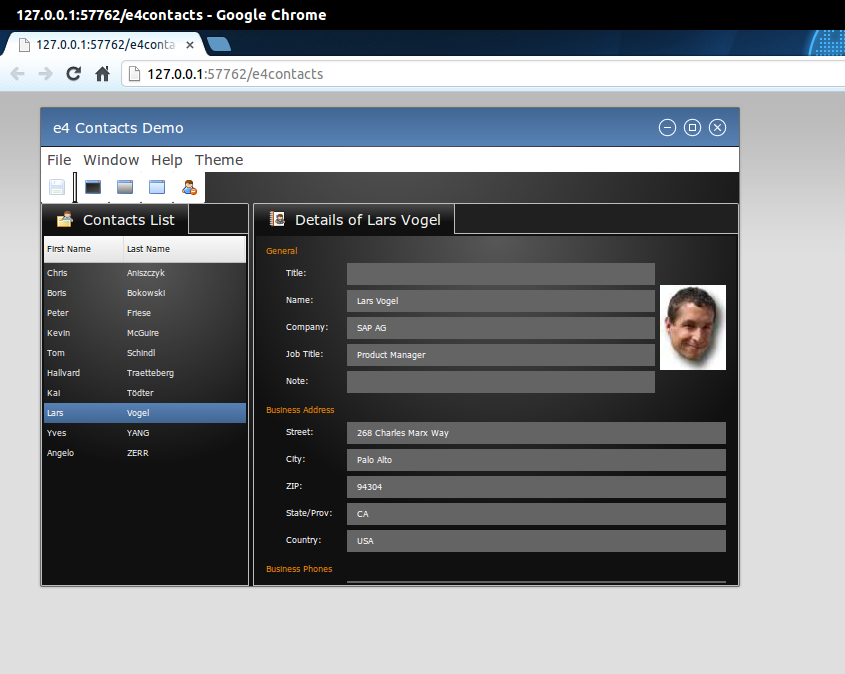

Inspired by the many requests to have E4 applications running on RAP, I spent some time hacking on it at EclipseCon resulting in what you see here. At this point it is just a proof of concept and requires some modifications to both RAP and E4, but it does work!
The forked repos for org.eclipse.platform.runtime and org.eclipse.platform.ui are available under my GitHub account. The RAP modifications will soon be available as a branch in the RAP repository. I am working on getting a build setup and making a target platform that can be downloaded and used out of the box. Stay tuned.
Without further ado, here is the E4 Contacts demo running on RAP: 